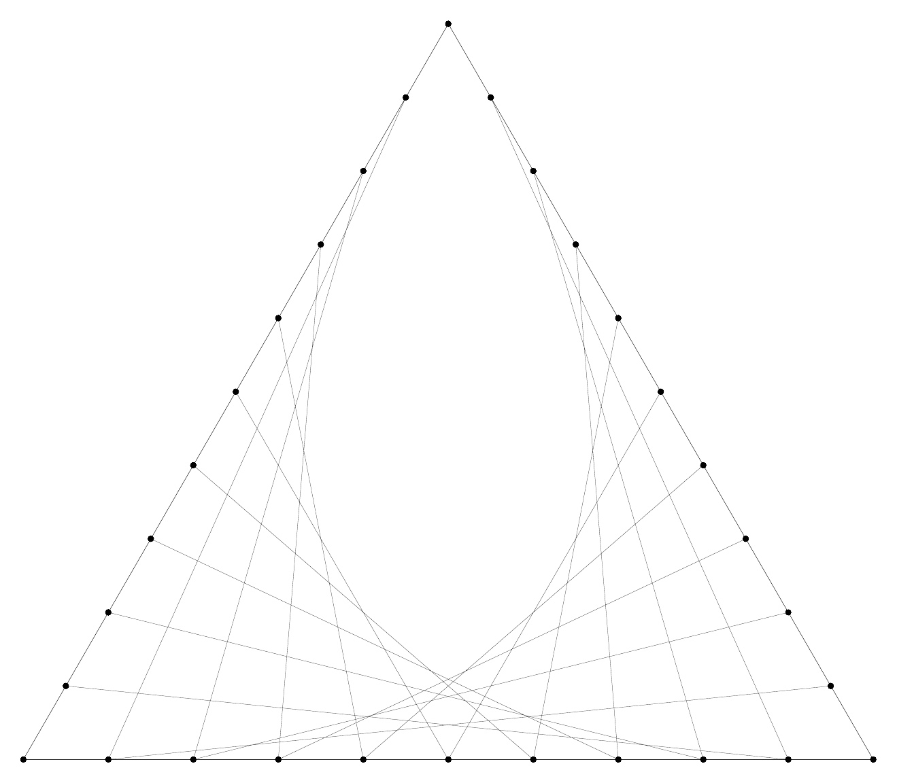
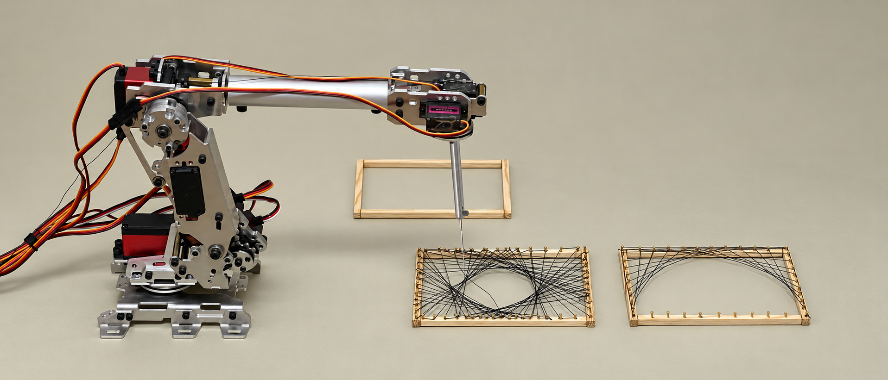
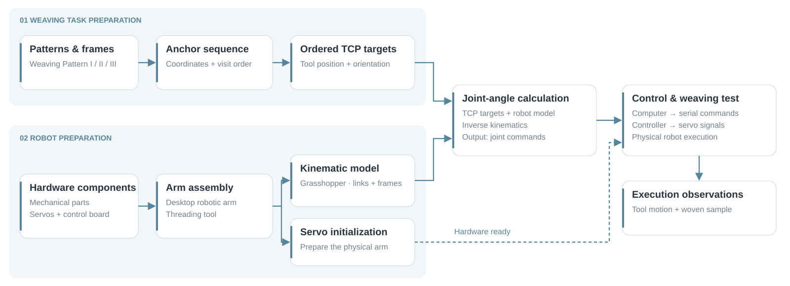
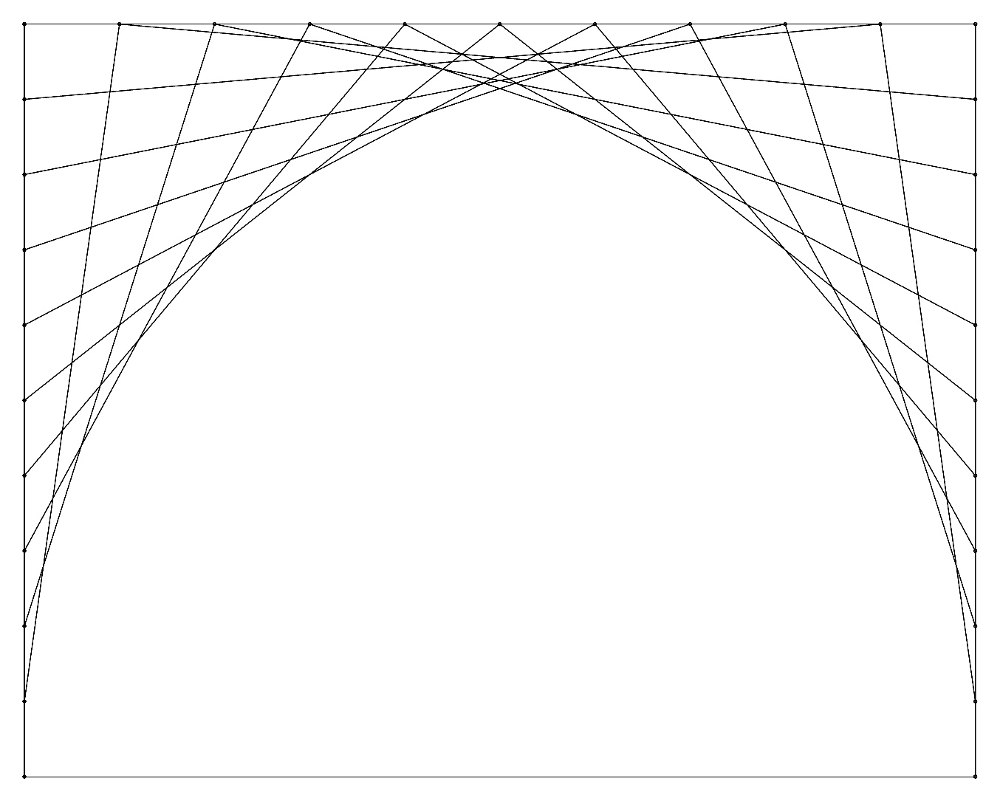
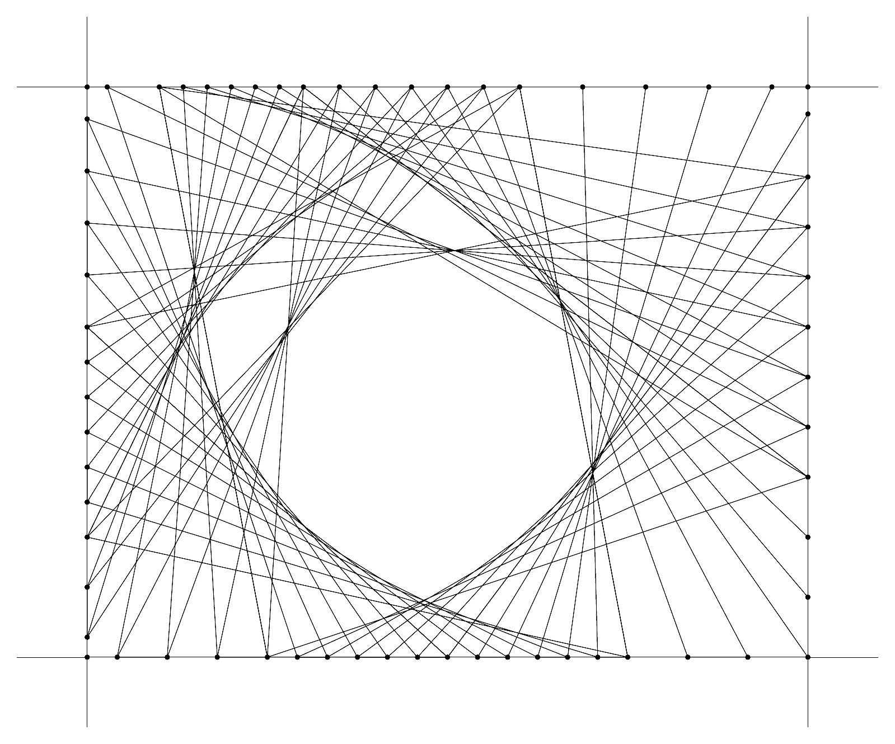
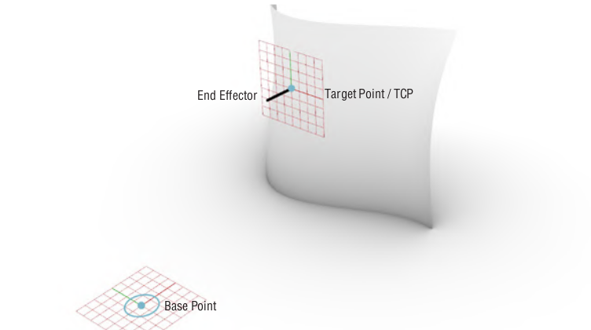
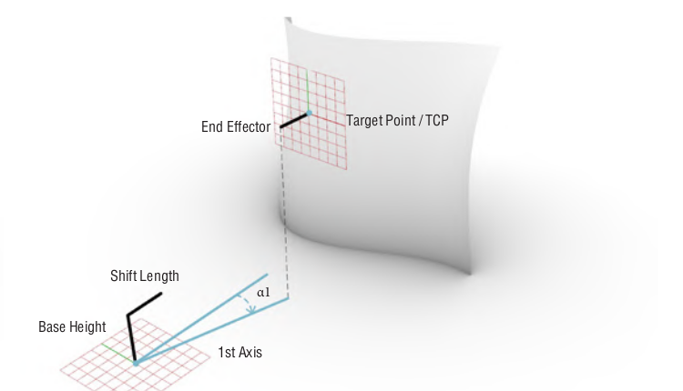
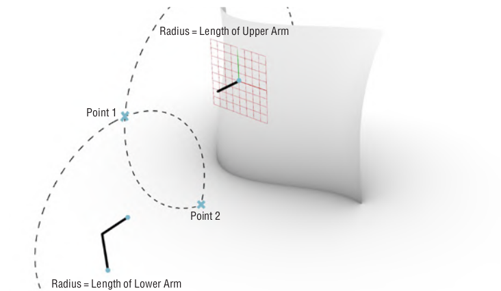
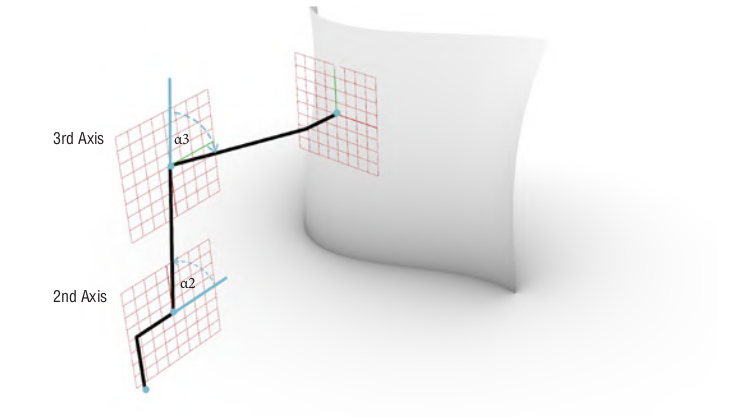
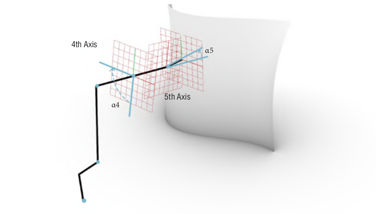

Weaving Pattern I

Alternating strands connect the base and sloping sides.
Parametric weaving patterns and desktop robotic fabrication
Fall 2024 · Individual project
Instructor: TENG TENG
I developed three parametric weaving patterns and translated their anchor sequences into targets for a desktop robotic arm. A Grasshopper kinematic model and servo control supported physical weaving tests.

01 / SYSTEM

Boundary connections become ordered target points in Grasshopper. The kinematic model relates tool targets to joint angles, and a serial interface sends commands to the control board. Source definitions document point ordering and serial transmission; photographs document weaving tests on a square frame.
02 / TOOLPATHS
Three weaving patterns define different connections between boundary anchors. An ordered sequence of anchor visits determines how the tool moves and how the thread pattern develops.
Full patterns appear in gray; playback follows one selected group. Reconstructed visualization: I–II use illustrative order; III follows the marked sequence. No lifting or anchor wrapping is modeled.
━ Thread┄ Reposition● Tool◎ Target→ Direction

Alternating strands connect the base and sloping sides.

Paired fans connect the top and side edges.

Crossed strands follow the marked anchor sequence.
The playback shows a tool endpoint in a normalized 2D frame. Speed controls presentation timing; this is not a physical simulation or a robot motion validation.
ROS 2 / RVIZ
A simplified arm follows the selected Pattern III sequence in ROS 2 and RViz, using link lengths from the Rhino reference model.
Recorded kinematic visualization. Frame placement and tool orientation are illustrative; thread physics and collisions are not simulated.
03 / KINEMATICS
The kinematic model represents the arm as connected links and joints. Target tool poses are expressed relative to the robot base and used to calculate joint configurations.






Geometric construction from the original project. The full six-axis solver has not been independently validated.
04 / HARDWARE & CONTROL
A threading tool guides the material across the frame. Joint targets are translated into servo commands through the control board.

05 / EXECUTION
Photographs record the desktop arm working over a square weaving frame, with the Grasshopper model visible on the connected computer. The sequence shows thread accumulating across the frame and a resulting woven sample; it does not establish physical execution of all three patterns.